Bilingual subtitles for Prime Video, translated by Claude.

I learn English from shows, but Prime Video only shows one subtitle track. This extension catches the player's own subtitle file, translates the whole episode with Claude, and overlays English on top, Chinese below — before the opening credits end.
Hooks fetch and XHR inside the page itself, sniffs out Prime's TTML subtitle file, and reads a clone of it — the player's own copy is never touched.
25 lines per Claude call, each batch translated in the context of its neighbours, with live progress in the player. Haiku by default; model switchable.
English above, Chinese below, synced to the video by binary search over the cue list every frame. Clicks pass straight through to the player controls.
Each episode gets a fingerprint hashed from its cue content. Re-watching loads the cached translation instantly — no matter what URL Prime serves it from.
A Chrome extension lives in three isolated worlds — the page, the content script, and the service worker — and the subtitle has to cross all of them. Tap a node to see its job and why it lives where it does.
Click on any block in the diagram to see what it does and why it lives in that world.
OCR or scraping the rendered captions would surface one line at a time. Catching the TTML file gives me the whole episode upfront — which is what makes context-aware batching, pre-translation and a single cache key per episode possible.
Subtitle text is full of quotes and apostrophes — free-form JSON parsing kept breaking on it. Forcing Claude to answer through a tool schema makes the output format a contract; when a batch still truncates, it bisects and retries instead of failing the episode.
Prime's subtitle URLs change between sessions. Hashing the cue text and timing into a fingerprint means the same episode always hits the cache — and a corrupted hit is caught by validating length before trusting it.